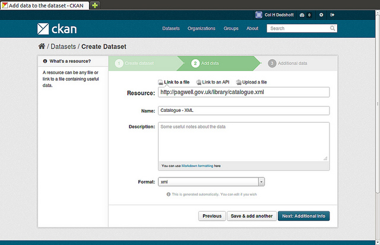
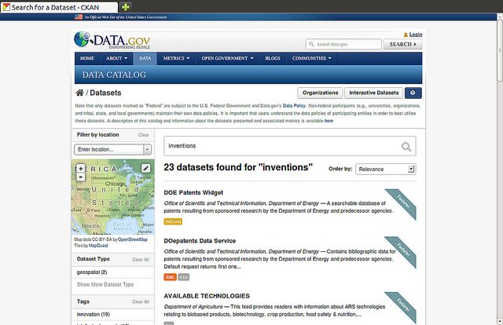
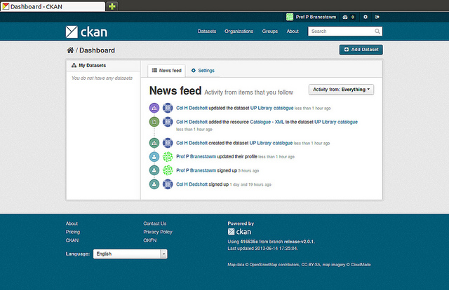
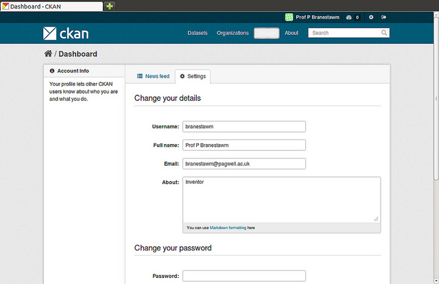

User guide¶
This user guide covers using CKAN’s web interface to organize, publish and find data. CKAN also has a powerful API (machine interface), which makes it easy to develop extensions and links with other information systems. The API is documented in API guide.
Some web UI features relating to site administration are available only to users with sysadmin status, and are documented in Sysadmin guide.
What is CKAN?¶
CKAN is a tool for making open data websites. (Think of a content management system like WordPress - but for data, instead of pages and blog posts.) It helps you manage and publish collections of data. It is used by national and local governments, research institutions, and other organizations who collect a lot of data.
Once your data is published, users can use its faceted search features to browse and find the data they need, and preview it using maps, graphs and tables - whether they are developers, journalists, researchers, NGOs, citizens, or even your own staff.
Datasets and resources¶
For CKAN purposes, data is published in units called “datasets”. A dataset is a parcel of data - for example, it could be the crime statistics for a region, the spending figures for a government department, or temperature readings from various weather stations. When users search for data, the search results they see will be individual datasets.
A dataset contains two things:
- Information or “metadata” about the data. For example, the title and publisher, date, what formats it is available in, what license it is released under, etc.
- A number of “resources”, which hold the data itself. CKAN does not mind what format the data is in. A resource can be a CSV or Excel spreadsheet, XML file, PDF document, image file, linked data in RDF format, etc. CKAN can store the resource internally, or store it simply as a link, the resource itself being elsewhere on the web. A dataset can contain any number of resources. For example, different resources might contain the data for different years, or they might contain the same data in different formats.
Users, organizations and authorization¶
CKAN users can register user accounts and log in. Normally (depending on the site setup), login is not needed to search for and find data, but is needed for all publishing functions: datasets can be created, edited, etc by users with the appropriate permissions.
Normally, each dataset is owned by an “organization”. A CKAN instance can have any number of organizations. For example, if CKAN is being used as a data portal by a national government, the organizations might be different government departments, each of which publishes data. Each organization can have its own workflow and authorizations, allowing it to manage its own publishing process.
An organization’s administrators can add individual users to it, with different roles depending on the level of authorization needed. A user in an organization can create a dataset owned by that organization. In the default setup, this dataset is initially private, and visible only to other users in the same organization. When it is ready for publication, it can be published at the press of a button. This may require a higher authorization level within the organization.
Datasets cannot normally be created except within organizations. It is possible, however, to set up CKAN to allow datasets not owned by any organization. Such datasets can be edited by any logged-in user, creating the possibility of a wiki-like datahub.
Note
The user guide covers all the main features of the web user interface (UI). In practice, depending on how the site is configured, some of these functions may be slightly different or unavailable. For example, in an official CKAN instance in a production setting, the site administrator will probably have made it impossible for users to create new organizations via the UI. You can try out all the features described at http://demo.ckan.org.
Using CKAN¶
Registering and logging in¶
Note
Registration is needed for most publishing features and for personalization features, such as “following” datasets. It is not needed to search for and download data.
To create a user ID, use the “Register” link at the top of any page. CKAN will ask for the following:
- Username – choose a username using only letters, numbers, - and _ characters. For example, “jbloggs” or “joe_bloggs93”.
- Full name – to be displayed on your user profile
- E-mail address – this will not be visible to other users
- Password – enter the same password in both boxes
If there are problems with any of the fields, CKAN will tell you the problem and enable you to correct it. When the fields are filled in correctly, CKAN will create your user account and automatically log you in.
Note
It is perfectly possible to have more than one user account attached to the same e-mail address. For this reason, choose a username you will remember, as you will need it when logging in.
Features for publishers¶
Adding a new dataset¶
Note
You may need to be a member of an organization in order to add and edit datsets. See the section Creating an organization below. On http://demo.ckan.org, you can add a dataset without being in an organization, but dataset features relating to authorization and organizations will not be available.
Step 1. You can access CKAN’s “Create dataset” screen in two ways.
- Select the “Datasets” link at the top of any page. From this, above the search box, select the “Add Dataset” button.
- Alternatively, select the “organizations” link at the top of a page. Now select the page for the organization that should own your new dataset. Provided that you are a member of this organization, you can now select the “Add Dataset” button above the search box.
Step 2. CKAN will ask for the following information about your data. (The actual data will be added in step 4.)
- Title – this title will be unique across CKAN, so make it brief but specific. E.g. “UK population density by region” is better than “Population figures”.
- Description – You can add a longer description of the dataset here, including information such as where the data is from and any information that people will need to know when using the data.
- Tags – here you may add tags that will help people find the data and link it with other related data. Examples could be “population”, “crime”, “East Anglia”. Hit the <return> key between tags. If you enter a tag wrongly, you can use its delete button to remove it before saving the dataset.
- License – it is important to include license information so that people know how they can use the data. This field should be a drop-down box. If you need to use a license not on the list, contact your site administrator.
- Organization - If you are a member of any organizations, this drop-down will enable you to choose which one should own the dataset. Ensure the default chosen is the correct one before you proceed. (Probably most users will be in only one organization. If this is you, CKAN will have chosen your organization by default and you need not do anything.)
Note
By default, the only required field on this page is the title. However, it is good practice to include, at the minimum, a short description and, if possible, the license information. You should ensure that you choose the correct organization for the dataset, since at present, this cannot be changed later. You can edit or add to the other fields later.
Step 3. When you have filled in the information on this page, select the “Next: Add Data” button. (Alternatively select “Cancel” to discard the information filled in.)
Step 4. CKAN will display the “Add data” screen.
This is where you will add one or more “resources” which contain the data for this dataset. Choose a file or link for your data resource and select the appropriate choice at the top of the screen:
- If you are giving CKAN a link to the data, like http://example.com/mydata.csv, then select “Link to a file” or “Link to an API”. (If you don’t know what an API is, you don’t need to worry about this option - select “Link to a file”.)
- If the data to be added to CKAN is in a file on your computer, select “Upload a file”. CKAN will give you a file browser to select it.
Step 5. Add the other information on the page. CKAN does not require this information, but it is good practice to add it:
- Name – a name for this resource, e.g. “Population density 2011, CSV”. Different resources in the dataset should have different names.
- Description – a short description of the resource.
- Format – the file format of the resource, e.g. CSV (comma-separated values), XLS, JSON, PDF, etc.
Step 6. If you have more resources (files or links) to add to the dataset, select the “Save & add another” button. When you have finished adding resources, select “Next: Additional Info”.
Step 7. CKAN displays the “Additional data” screen.
- Visibility – a Public dataset is public and can be seen by any user of the site. A Private dataset can only be seen by members of the organization owning the dataset and will not show up in searches by other users.
- Author – The name of the person or organization responsible for producing the data.
- Author e-mail – an e-mail address for the author, to which queries about the data should be sent.
- Maintainer / maintainer e-mail – If necessary, details for a second person responsible for the data.
- Custom fields – If you want the dataset to have another field, you can add the field name and value here. E.g. “Year of publication”. Note that if there is an extra field that is needed for a large number of datasets, you should talk to your site administrator about changing the default schema and dataset forms.
Note
Everything on this screen is optional, but you should ensure the “Visibility” is set correctly. It is also good practice to ensure an Author is named.
Changed in version 2.2: Previous versions of CKAN used to allow adding the dataset to existing groups in this step. This was changed. To add a dataset to an existing group now, go to the “Group” tab in the Dataset’s page.
Step 8. Select the ‘Finish’ button. CKAN creates the dataset and shows you the result. You have finished!
You should be able to find your dataset by typing the title, or some relevant words from the description, into the search box on any page in your CKAN instance. For more information about finding data, see the section Finding data.
Editing a dataset¶
You can edit the dataset you have created, or any dataset owned by an organization that you are a member of. (If a dataset is not owned by any organization, then any registered user can edit it.)
- Go to the dataset’s page. You can find it by entering the title in the search box on any page.
- Select the “Edit” button, which you should see above the dataset title.
- CKAN displays the “Edit dataset” screen. You can edit any of the fields (Title, Description, Dataset, etc), change the visibility (Private/Public), and add or delete tags or custom fields. For details of these fields, see Adding a new dataset.
- When you have finished, select the “Update dataset” button to save your changes.
Adding, deleting and editing resources¶
- Go to the dataset’s “Edit dataset” page (steps 1-2 above).
- In the left sidebar, there are options for editing resources. You can select an existing resource (to edit or delete it), or select “Add new resource”.
- You can edit the information about the resource or change the linked or uploaded file. For details, see steps 4-5 of “Adding a new resource”, above.
- When you have finished editing, select the button marked “Update resource” (or “Add”, for a new resource) to save your changes. Alternatively, to delete the resource, select the “Delete resource” button.
Deleting a dataset¶
- Go to the dataset’s “Edit dataset” page (see “Editing a dataset”, above).
- Select the “Delete” button.
- CKAN displays a confirmation dialog box. To complete deletion of the dataset, select “Confirm”.
Note
The “Deleted” dataset is not completely deleted. It is hidden, so it does not show up in any searches, etc. However, by visiting the URL for the dataset’s page, it can still be seen (by users with appropriate authorization), and “undeleted” if necessary. If it is important to completely delete the dataset, contact your site administrator.
Creating an organization¶
In general, each dataset is owned by one organization. Each organization includes certain users, who can modify its datasets and create new ones. Different levels of access privileges within an organization can be given to users, e.g. some users might be able to edit datasets but not create new ones, or to create datasets but not publish them. Each organization has a home page, where users can find some information about the organization and search within its datasets. This allows different data publishing departments, bodies, etc to control their own publishing policies.
To create an organization:
- Select the “Organizations” link at the top of any page.
- Select the “Add Organization” button below the search box.
- CKAN displays the “Create an Organization” page.
- Enter a name for the organization, and, optionally, a description and image URL for the organization’s home page.
- Select the “Create Organization” button. CKAN creates your organization and displays its home page. Initially, of course, the organization has no datasets.
You can now change the access privileges to the organization for other users - see Managing an organization below. You can also create datasets owned by the organization; see Adding a new dataset above.
Note
Depending on how CKAN is set up, you may not be authorized to create new organizations. In this case, if you need a new organization, you will need to contact your site administrator.
Managing an organization¶
When you create an organization, CKAN automatically makes you its “Admin”. From the organization’s page you should see an “Admin” button above the search box. When you select this, CKAN displays the organization admin page. This page has two tabs:
- Info – Here you can edit the information supplied when the organization was created (title, description and image).
- Members – Here you can add, remove and change access roles for different users in the organization. Note: you will need to know their username on CKAN.
By default CKAN allows members of organizations with three roles:
- Member – can see the organization’s private datasets
- Editor – can edit and publish datasets
- Admin – can add, remove and change roles for organization members
Finding data¶
Searching the site¶
To find datasets in CKAN, type any combination of search words (e.g. “health”, “transport”, etc) in the search box on any page. CKAN displays the first page of results for your search. You can:
- View more pages of results
- Repeat the search, altering some terms
- Restrict the search to datasets with particular tags, data formats, etc using the filters in the left-hand column
If there are a large number of results, the filters can be very helpful, since you can combine filters, selectively adding and removing them, and modify and repeat the search with existing filters still in place.
If datasets are tagged by geographical area, it is also possible to run CKAN with an extension which allows searching and filtering of datasets by selecting an area on a map.
Searching within an organization¶
If you want to look for data owned by a particular organization, you can search within that organization from its home page in CKAN.
- Select the “Organizations” link at the top of any page.
- Select the organization you are interested in. CKAN will display your organization’s home page.
- Type your search query in the main search box on the page.
CKAN will return search results as normal, but restricted to datasets from the organization.
If the organization is of interest, you can opt to be notified of changes to it (such as new datasets and modifications to datasets) by using the “Follow” button on the organization page. See the section Managing your news feed below. You must have a user account and be logged in to use this feature.
Exploring datasets¶
When you have found a dataset you are interested and selected it, CKAN will display the dataset page. This includes
- The name, description, and other information about the dataset
- Links to and brief descriptions of each of the resources
The resource descriptions link to a dedicated page for each resource. This resource page includes information about the resource, and enables it to be downloaded. Many types of resource can also be previewed directly on the resource page. .CSV and .XLS spreadsheets are previewed in a grid view, with map and graph views also available if the data is suitable. The resource page will also preview resources if they are common image types, PDF, or HTML.
The dataset page also has two other tabs:
- Activity stream – see the history of recent changes to the dataset
- Related items – see any links to web pages related to this dataset, or add your own links.
If the dataset is of interest, you can opt to be notified of changes to it by using the “Follow” button on the dataset page. See the section Managing your news feed below. You must have a user account and be logged in to use this feature.
Personalization¶
CKAN provides features to personalize the experience of both searching for and publishing data. You must be logged in to use these features.
Managing your news feed¶
At the top of any page, select the dashboard symbol (next to your name). CKAN displays your News feed. This shows changes to datasets that you follow, and any changed or new datasets in organizations that you follow. The number by the dashboard symbol shows the number of new notifications in your News feed since you last looked at it. As well as datasets and organizations, it is possible to follow individual users (to be notified of changes that they make to datasets).
If you want to stop following a dataset (or organization or user), go to the dataset’s page (e.g. by selecting a link to it in your News feed) and select the “Unfollow” button.
Managing your user profile¶
You can change the information that CKAN holds about you, including what other users see about you by editing your user profile. (Users are most likely to see your profile when you edit a dataset or upload data to an organization that they are following.) To do this, select the gearwheel symbol at the top of any page.
CKAN displays the user settings page. Here you can change:
- Your username
- Your full name
- Your e-mail address (note: this is not displayed to other users)
- Your profile text - an optional short paragraph about yourself
- Your password
Make the changes you require and then select the “Update Profile” button.
Note
If you change your username, CKAN will log you out. You will need to log back in using your new username.